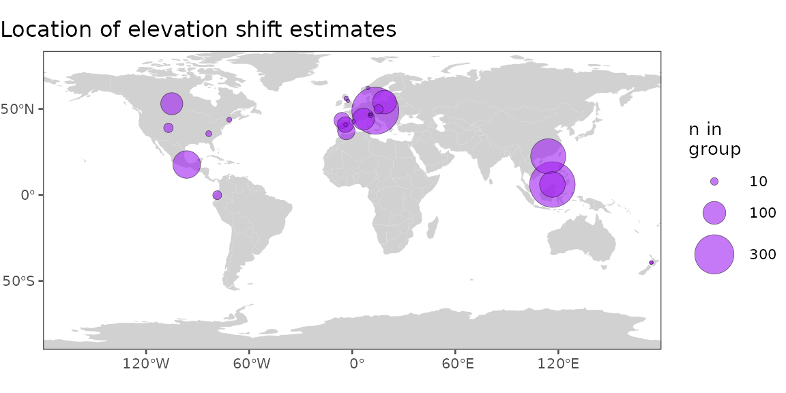
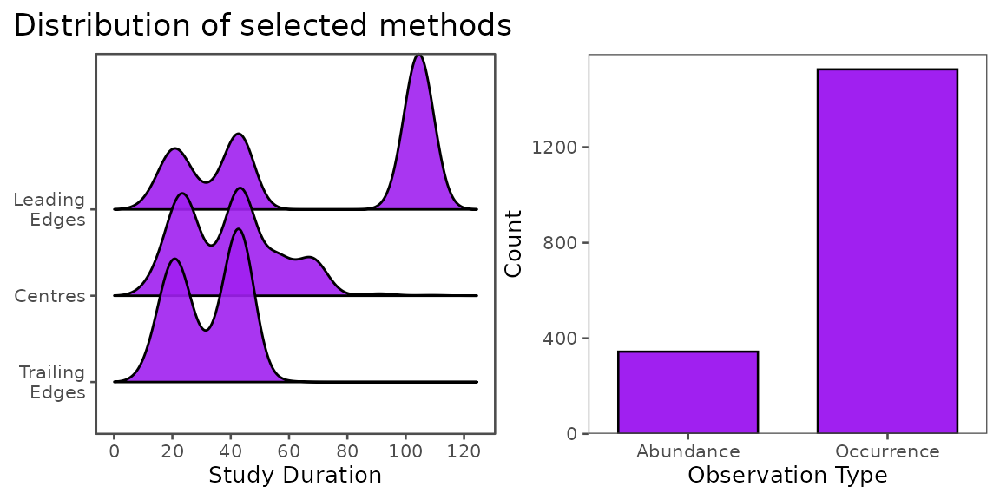
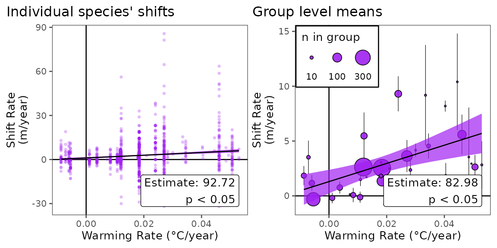

Curating Data for Hypothesis Testing
curating_for_hypothesis_testing.RmdCurating Data for Research and Hypothesis Testing
# this vignette also uses the following packages for data visualization
# downstream of BioShiftR functions. They will need to be installed
# in order to run code from this vignette.
require(ggallin)
require(rnaturalearth)
require(ggridges)
require(ggthemes)
require(plotrix)
require(patchwork)
require(broom)Here, we demonstrate how BioShifts and the BioShiftR package can be used to access, subset, and organize bioshifts data for research, hypothesis testing, and connecting to external data sources.
Example Scenario: do terrestrial invertebrates on faster-warming mountains shift at faster rates than those on more slowly-warming mountains?
Perhaps we want to test whether rates of warming drive upslope range shifts of global plant species. Using BioShiftR, we can easily access and organize data to test targeted hypotheses.
Built-in filter steps
Many of BioShiftR’s functions provide simple methods for targeting,
filtering, and subsetting range shift data. The
get_shifts() function, for example, has arguments for
continent, type (of range shift), and group (broad taxonomic/functional
classifications); see the get_shifts() function page for
details on options.
Other functions which merge values from other dataframes to the range
shifts database also have filtering options, usually for selecting
study-level or species-specific values. For example, the
add_cv(), add_baselines(), and
add_poly_info() functions all contain options to either add
these values from species-level or study-level polygons.
Get the data
In this case, we can use get_shifts() to easily query
the ~32,000 range shifts in the BioShifts database to our target group,
target range shift type, and target continent. Here, we will query
elevational range shifts for terrestrial invertebrates.
library(BioShiftR)
library(dplyr)
# get shifts
shifts <- get_shifts(type = "ELE",
group = "Terrestrial Invertebrates")View minimal shift data
Plot a histogram of raw shift rates from the minimal range shifts dataset.
Show Code
# plot a histogram
p1 <- shifts %>%
ggplot(aes(x = calc_rate)) +
# add histogram
geom_histogram(fill = "purple",
center = 0,
color = "black",
linewidth = .2) +
# add line at zero
geom_vline(xintercept = 0) +
# transform x axis
scale_x_continuous(trans = ggallin::ssqrt_trans) +
# labels
labs(x = "Range Shift Rate (m/year)",
y = "Count",
title = "Elevation shift rates for terrestrial invertebrates") +
# theme
ggthemes::theme_few(base_size = 10) +
theme(plot.title.position = "plot") +
# coords
coord_cartesian(xlim = c(-100, 100),
ylim = c(-4, 440),
expand = F) +
# annotate n
annotate(geom = "text",
x = 90,
y = 420,
label = paste0("n = ",scales::comma(nrow(shifts))),
hjust = 1.2,
vjust = 1.2,
size = 2.5)
# view p1:
# p1
Check spatial distribution
Range shift estimations from published literature have important
spatial biases that might limit their inferences. Use the
add_polygons() function for viewing individual study areas
or species-specific study areas, or more simply, the
add_poly_info() function for summarized spatial
metadata.
# add polygon info
shifts2 <- shifts %>%
# add info for study area polygons (type "SA")
add_poly_info(type = "SA") Plot summarized spatial distribution
Below, we’ll plot the number of terrestrial arthropod elevation shifts in each article/polygon combination.
Show Code
# make map ----------------------------------------------------------------
p2 <- shifts2 %>%
# summarize shifts by article and polygon ID
group_by(article_id, poly_id, lat_cent_deg, lon_cent_deg) %>%
summarize(lat_cent_deg = unique(lat_cent_deg),
lon_cent_deg = unique(lon_cent_deg),
n = n(),
.groups = "drop") %>%
arrange(desc(n)) %>%
# plot
ggplot() +
# add world geometries
geom_sf(data = rnaturalearth::ne_countries(returnclass = "sf"),
fill = "grey82", color = "transparent") +
# add points
geom_point(aes(x = lon_cent_deg,
y = lat_cent_deg,
size = n),
fill = "purple",
shape = 21,
stroke = .2,
alpha = .6) +
# scale size
scale_size_area(breaks = c(10,100,300),
max_size = 12) +
# theme
ggthemes::theme_few(base_size = 10) +
theme(legend.position = "right",
plot.title.position = "plot",
legend.justification = c(.5,.5),
legend.box.background = element_blank(),
legend.background = element_blank(),
plot.margin = margin(0,0,0,l=0),
legend.box = "horizontal") +
coord_sf(expand = F) +
# labs
labs(x = NULL,
y = NULL,
size = "n in\ngroup",
title = "Location of elevation shift estimates")
# view p2:
# p2
Examine methodological variability
Several methodological variables describing how range shifts are detected are important to consider when comparing shift estimates across studies. For example, shifts might be estimated with different types of input data, over different temporal durations, with different sampling structures, or while defining focal range parameters in different ways. We collected metadata on 16 methodological variables, which can be important to consider when analyzing shift rates across studies.
# add methods to shifts database
shifts3 <- shifts2 %>%
# add methodological variables
add_methods()Plot methodological variability
View the duration of studies at each range parameter, and the proportion of shift estimations by observation type. In some cases, methodological variables such as these might be used to filter shift estimates, or as random effects to account for methodological differences in statistical models.
Show Code
# ridgeplot of study durations by parameter
p3.1 <- shifts3 %>%
# change parameter names and order
mutate(param2 = recode(param,
"LE" = "Leading\nEdges",
"TE" = "Trailing\nEdges",
"O" = "Centres")) %>%
mutate(param2 = factor(param2, levels = c("Trailing\nEdges","Centres","Leading\nEdges"))) %>%
# plot
ggplot(aes(x = duration,
y = param2)) +
# add density ridges
ggridges::geom_density_ridges2(fill = "purple", alpha = .9) +
# axes
scale_x_continuous(breaks = scales::pretty_breaks()) +
# theme stuff
ggthemes::theme_few(base_size = 10) +
# labs
labs(y = NULL,
x = "Study Duration") +
coord_cartesian(clip = "off")
# bar plot of observation types
p3.2 <- shifts3 %>%
# plot
ggplot(aes(x = obs_type)) +
# add bars
geom_bar(width = .7,
fill = "purple",
color = "black") +
# coords
coord_cartesian(xlim = c(.5, 2.5),
ylim = c(0, 1590),
expand = F) +
# theme stuff
ggthemes::theme_few(base_size = 10) +
# labs
scale_x_discrete(labels = c("Abundance","Occurrence")) +
labs(y = "Count",
x = "Observation Type")
library(patchwork)
p3 <- ((
(p3.1 + theme(plot.margin = margin(r=2))) | (p3.2 + theme(plot.margin = margin(l = 2)))))+
plot_annotation( title = 'Distribution of selected methods')
# view p3:
# p3
Test association with climate exposure
Here, our hypothesis tests the association of shift rates and the
warming rate of mountain environments, so we’ll use the
add_trends() function to add warming trends for every
estimated shift.
# add methods to shifts database
shifts4 <- shifts3 %>%
# add warming trends for study areas
# `type = "SP"` would add species-level warming trends, but not every
# species has total range areas available, so we'll use study-level trends
# to minimize NAs in the already-limited dataset
add_trends(type = "SA")
In order to test this hypothesis, we will model individual shifts as a function of warming rate, but in reality, individual shifts are not independent replicates, and thus, linear models on individual shift estimates might not be appropriate. While there are several possible ways to deal with nonindependence, here, we will average shift rates within studies and polygons to create independent samples, then model the average rates, weighted by n.
Show Code
# model shifts as independent
mod_all <- lm(data = shifts4,
formula = calc_rate ~ trend_temp_mean)
# pull trend and p_val
mod_all_annotation <-
paste0("Estimate: ", round(summary(mod_all)$coefficients["trend_temp_mean","Estimate"], 2), "\n",
"p ", ifelse(summary(mod_all)$coefficients["trend_temp_mean","Pr(>|t|)"] < .05, "< 0.05", round(summary(mod_all)$coefficients["trend_temp_mean","Pr(>|t|)"], 2)))
# augment model
mod_all_au <- broom::augment(mod_all, interval = "confidence")
# plot
p4.1 <- mod_all_au %>%
# plot
ggplot(aes(x = trend_temp_mean,
y = calc_rate)) +
# add x and y lines at 0
geom_hline(yintercept = 0) +
geom_vline(xintercept = 0) +
# add raw points
geom_point(alpha = .3,
color = "purple",
shape = 16,
size = 1) +
# add confidence interval
geom_ribbon(aes(ymin = .lower,
ymax = .upper),
fill = "purple", alpha = .7) +
# add fitted line
geom_line(aes(y = .fitted)) +
# labs
labs(x = "Warming Rate (°C/year)",
y = "Shift Rate\n(m/year)",
title = "Individual species' shifts") +
# theme
ggthemes::theme_few(base_size = 10) +
theme(plot.title.position = "plot") +
# add annotation
annotate(geom = "label",
x = max(shifts4$trend_temp_mean),
y = min(shifts4$calc_rate),
label = mod_all_annotation,
hjust = 1,
vjust = 0)
# summarize by study ID, polygon ID, and timeframe of sampling
shifts4_means <- shifts4 %>%
# group by article ID and polygon ID (polygons are within articles)
group_by(article_id, poly_id, midpoint_firstperiod, midpoint_lastperiod) %>%
# find mean rates
summarize(
se_calc_rate = plotrix::std.error(calc_rate),
se_trend = plotrix::std.error(trend_temp_mean),
calc_rate = mean(calc_rate, na.rm= T),
trend_temp_mean = mean(trend_temp_mean, na.rm=T),,
n = n(),
.groups = "drop")
# plot mean data and basic model fit
mod_means <- lm(data = shifts4_means,
formula = calc_rate ~ trend_temp_mean,
weights = sqrt(n)) #sqrt the weights to normalize them a bit
mod_means_annotation <-
paste0("Estimate: ", round(summary(mod_means)$coefficients["trend_temp_mean","Estimate"], 2), "\n",
"p ", ifelse(summary(mod_means)$coefficients["trend_temp_mean","Pr(>|t|)"] < .05, "< 0.05", round(summary(mod_means)$coefficients["trend_temp_mean","Pr(>|t|)"], 2)))
mod_means_au <- broom::augment(mod_means, shifts4_means, interval = "confidence")
# plot
p4.2 <- mod_means_au %>%
# start plot
ggplot(aes(x = trend_temp_mean,
y = calc_rate)) +
# add x and y lines at 0
geom_hline(yintercept = 0) +
geom_vline(xintercept = 0) +
# add raw data
geom_errorbar(aes(xmin = trend_temp_mean - se_trend,
xmax = trend_temp_mean + se_trend),
linewidth = .2) +
geom_errorbar(aes(ymin = calc_rate - se_calc_rate,
ymax = calc_rate + se_calc_rate),
linewidth = .2) +
geom_point(alpha = .9,
fill = "purple",
shape = 21,
# size = 2,
aes(size = n)
) +
# add confidence interval
geom_ribbon(aes(ymin = .lower,
ymax = .upper),
fill = "purple", alpha = .7) +
# add fitted line
geom_line(data = mod_means_au,
aes(y = .fitted)) +
# scale point size
scale_size_area(breaks = c(10,100,300),
max_size = 7) +
# labels
labs(x = "Warming Rate (°C/year)",
y = "Shift Rate\n(m/year)",
title = "Group level means",
size = "n in group") +
# theme
ggthemes::theme_few(base_size = 10) +
theme(plot.title.position = "plot",
legend.position = "inside",
legend.position.inside = c(.005, .995),
legend.justification = c(0,1),
legend.direction = "horizontal",
legend.title.position = "top",
legend.background = element_rect(color = "black"),
legend.text.position = "bottom") +
# add annotation
annotate(geom = "label",
x = max(shifts4_means$trend_temp_mean),
y = min(shifts4_means$calc_rate - shifts4_means$se_calc_rate, na.rm=T),
label = mod_means_annotation,
hjust = 1,
vjust = 0)
# merge plots
p4 <- ((
(p4.1 + theme(plot.margin = margin(r=2))) | (p4.2 + theme(plot.margin = margin(l = 2)))))
# view p4:
# p4
Conclusion
Here, we demonstrate how the BioShiftR package can be
used to quickly and simply access data for hypothesis testing for
drivers of species’ range shifts. We show that (from this basic
analysis), warming rate seems to be significantly positively correlated
with shift rates of terrestrial invertebrates up elevational gradients,
in agreement with past studies. While the extent of data and complexity
of models that could be tested with BioShifts v2 and
BioShiftR expand far past what is done here, this workflow
serves as one example of how these tools can aid in testing hypotheses
about species’ redistributions at a global scale.